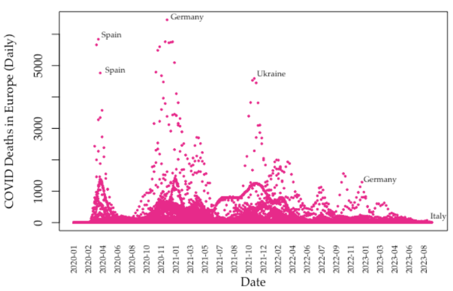
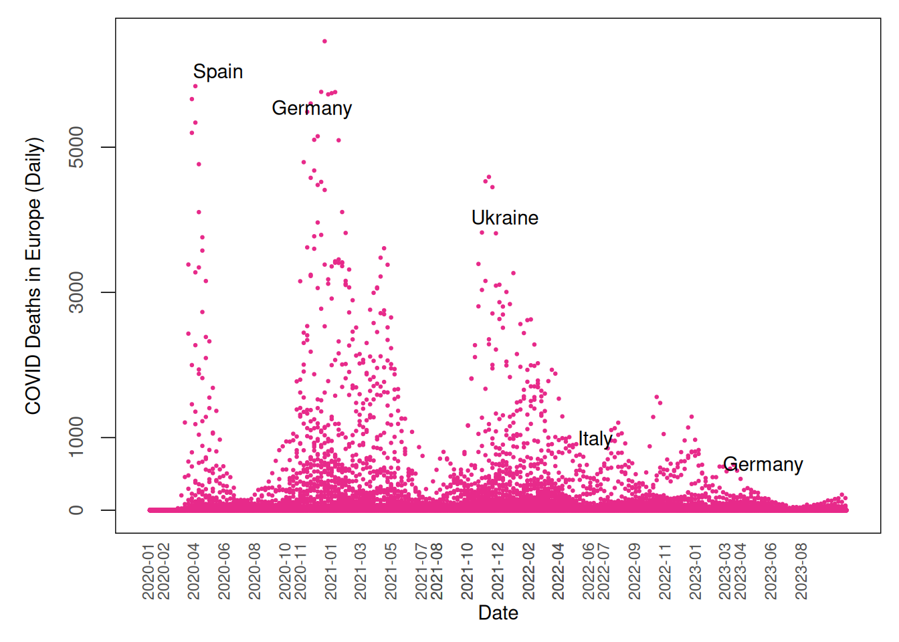

## Download COVID data from OWID GitHub
# owidall = read.csv("https://github.com/owid/covid-19-data/blob/master/public/data/owid-covid-data.csv?raw=true")
# Save it to save time when rendering
# saveRDS(owidall, "./data/owidall_assign3.rds")
owidall = readRDS("./data/owidall_assign3.rds")
# Deselect cases/rows with OWID
owidall = owidall[!grepl("^OWID", owidall$iso_code), ]
# Subset by continent: Europe
owideu = subset(owidall, continent=="Europe")Assignment 3
Pre-hackathon by team
I had to replicate the following scatterplot with my own code.

The following code was provided to get the dataset.
Now I write code in hopes of replicating the plot.
library(tidyverse)
library(ggplot2)
library(lubridate)owideu <- owideu |>
mutate(date = as.Date(date, format = "%Y-%m-%d"),
date_mon = floor_date(date, "month")) |>
filter(!(location %in% c("United Kingdom", "Russia")))
wave1_st <- as.Date("2020-02-01")
wave2_st <- as.Date("2020-11-01")
wave3_st <- as.Date("2021-08-01")
wave4_st <- as.Date("2021-08-01")
wave5_st <- as.Date("2022-07-01")
wave6_st <- as.Date("2023-04-01")
wave1 <- seq(wave1_st, wave1_st %m+% months(9), by = "2 months")
wave2 <- seq(wave2_st, wave2_st %m+% months(9), by = "2 months")
wave3 <- seq(wave3_st, wave3_st %m+% months(11), by = "2 months")
wave4 <- seq(wave4_st, wave4_st %m+% months(9), by = "2 months")
wave5 <- seq(wave5_st, wave5_st %m+% months(9), by = "2 months")
wave6 <- seq(wave6_st, wave6_st %m+% months(5), by = "2 months")
wave6_fin <- seq(wave6_st, wave6_st %m+% months(7), by = "2 months")
date_labels <- c(as.Date("2020-01-01"),
wave1, wave2, wave3, wave4, wave5, wave6
)
owideu <- owideu |>
mutate(waves = case_when(
date_mon %in% wave1 ~ 'wave1',
date_mon %in% wave2 ~ 'wave2',
date_mon %in% wave3 ~ 'wave3',
date_mon %in% wave4 ~ 'wave4',
date_mon %in% wave5 ~ 'wave5',
date_mon %in% wave6_fin ~ 'wave6',
))
text_labels <- owideu |>
filter(!is.na(waves)) |>
group_by(waves) |>
summarise(max_deaths=max(new_deaths, na.rm=T), .groups='drop') |>
left_join(owideu |> select(location, date, new_deaths, waves),
join_by(waves, max_deaths==new_deaths)) |>
select(x=date, y=max_deaths, label=location)
owideu |>
filter(date >= '2020-01-01' & date <= '2023-10-31') |>
filter(location != c("United Kingdom")) |>
# group_by(date_mon, iso_code) |>
# summarise(total_deaths=sum(new_deaths_smoothed, na.rm=T), .groups = 'drop') |>
# filter(!is.na(new_deaths)) |>
ggplot(aes(x=date, y=new_deaths)) +
geom_point(color="#E72A8A", cex=0.5) +
ggrepel::geom_text_repel(data = text_labels,
aes(x=x, y=y), label=text_labels |> select(label) |> pull()) +
labs(x = "Date", y = "COVID Deaths in Europe (Daily)") +
theme_minimal() +
scale_x_date(
# limits = c(as.Date('2020-02-01', format="%Y-%m-%d"), as.Date('2023-10-01', format="%Y-%m-%d")),
breaks = date_labels,
# labels = ,
date_labels = "%Y-%m"
# expand = expansion(add = c(30, 0)) #c(0,0)
) +
scale_y_continuous(breaks = c(0, 1000, seq(3000, 10000, 2000))) +
theme(axis.text.x=element_text(angle=90, hjust=-3, vjust = 0.5),
axis.text.y = element_text(size = 11, angle=90, vjust=3, hjust = 0.5),
axis.title.y = element_text(vjust = 7),
panel.grid = element_blank(),
panel.border = element_rect(colour = "black", fill=NA),
plot.margin = margin(t = 10, r = 10, b = 10, l = 30),
axis.ticks.y = element_line(color = "black", linewidth = 0.3),
axis.ticks.length.y = unit(8, "pt"))
This is as close as I could get. There are a few aspects I have missed.